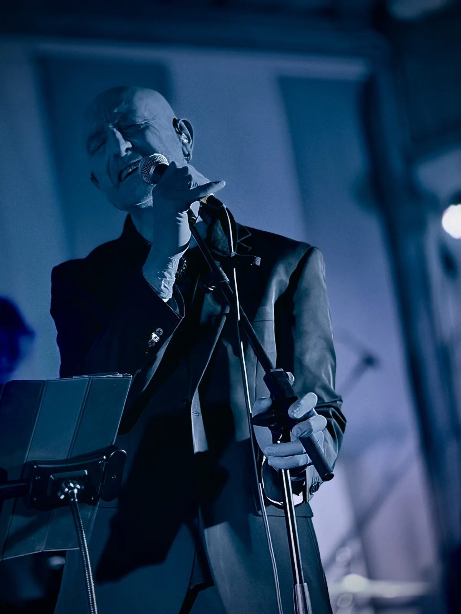

Live concept album · 13 tracks
Nihil Land
Before he was Nihil, Nihil crossed a thousand worlds, lingering long on each of them and leaving traces of himself behind.
Live concept album · 13 tracks
Before he was Nihil, Nihil crossed a thousand worlds, lingering long on each of them and leaving traces of himself behind.
Nihil Land is a concept album brimming with questions: a cosmic journey mirrored in a restless inner search, touching on universal themes through a wide range of styles and references.
Heir to the throne of a kingdom without land, the alien Nihil reaches our planet after long cosmic wanderings, and here he discovers music, the chosen vehicle for sharing his story and his search. And so the flight from Nihil Land, the longing for a lost age and past loves, the constant swing of desire between emptiness and fullness, solitude and embrace, take shape in sound in a precious gallery of songs.
The album moves from the energetic rock and full sound of Symphony in Minor to the ethereal guitar arpeggios of Un sogno sospeso, from the dance of La via di Sisifo to the languid, “atypical” blues of Nient'altro da aggiungere, ending with the title track Nihil Land, which gathers this vast universe into a simple, moving close.
Nihil Land speaks to us and about us. Through an alien’s eyes it shows us the complexity of being human: strangers to the Earth yet inseparable from it, searching for love, but also for solitude.



Photographs: IANUA.
In 2022 Daniele left Rome to return to his native Versilia.
There, after more than thirty years apart, he was reunited with his old piano, left at his parents’ house, and moved it to his home in the hills. There, between solitude and the sea, he conceived what a few years later would take its final shape as the concept album Nihil Land.
Nihil is nothingness: the best place to live, the emptiness that saves us from forced fullness, the garden where we find ourselves again. Who said emptiness is a space of negation? Quite the opposite: nothingness is the place where everything is possible.
The live show is designed for intimate venues, with an audience of up to around a hundred people. It is also available in an acoustic version for voice and piano.